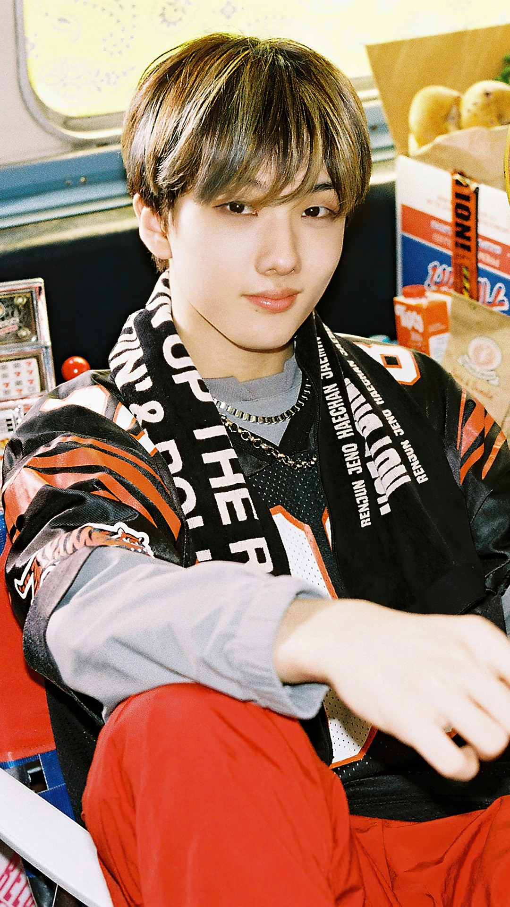
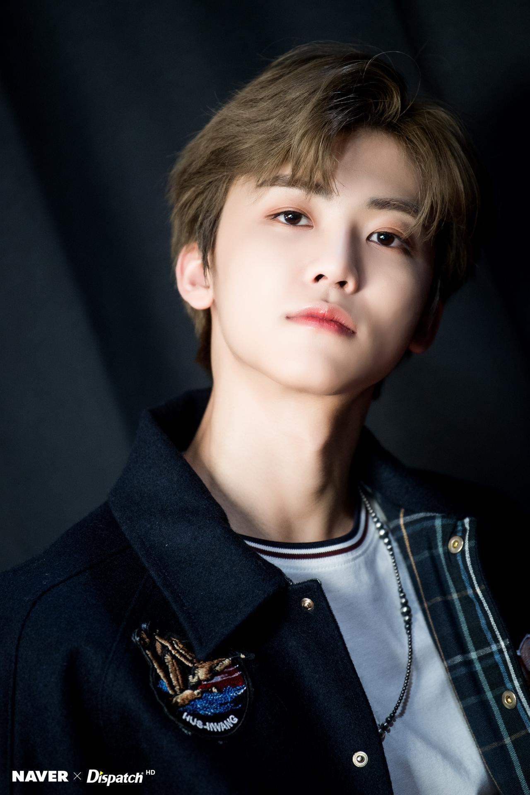
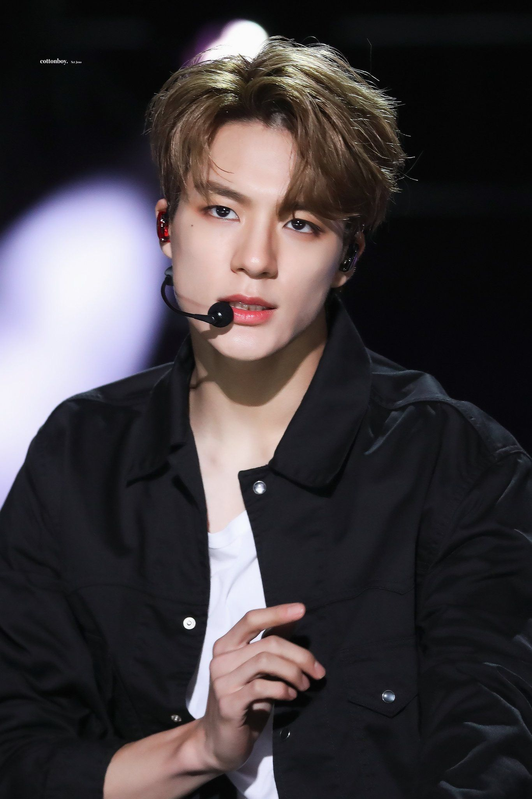
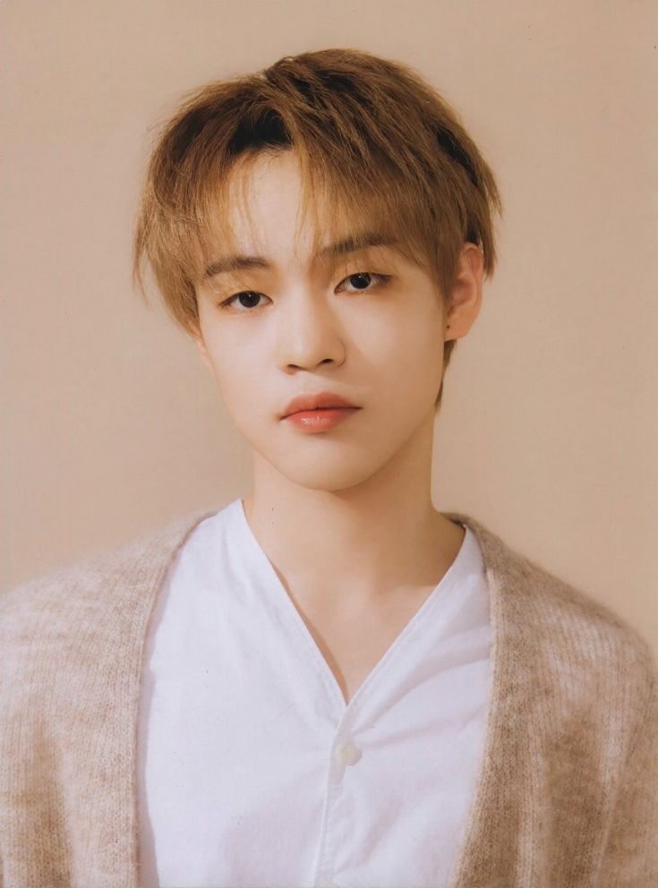
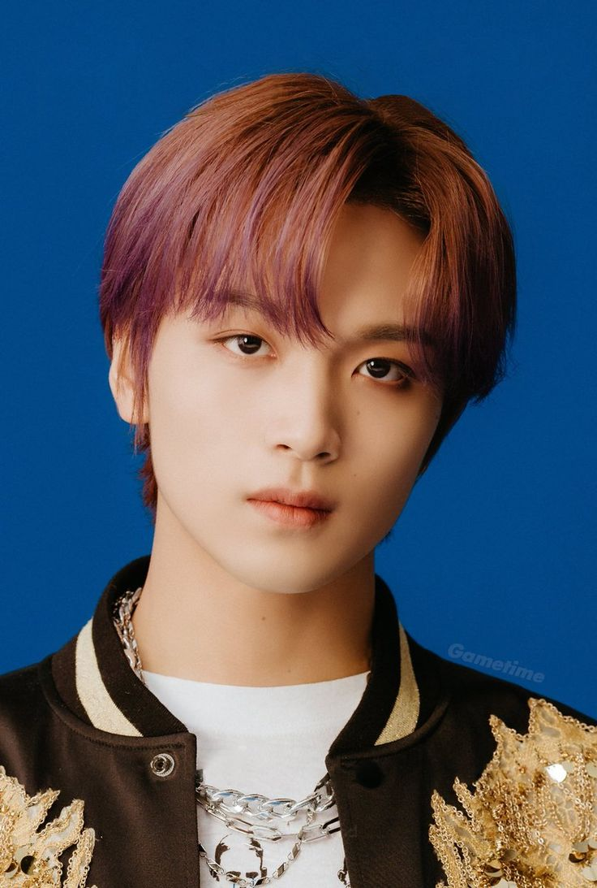

Mark Lee (lahir 2 Agustus 1999), lebih dikenal dengan nama Mark adalah rapper, dancer, dan penyanyi berkebangsaan Kanada. Ia merupakan anggota dari boyband asal Korea Selatan, NCT. Mark tergabung dalam 3 sub-unit NCT, yakni NCT U, NCT 127, dan NCT Dream

Ji-sung
Park Ji-sung (박지성, lahir 5 Februari 2002), atau Jisung, adalah seorang penyanyi Korea Selatan yang berada di bawah naungan SM Entertainment. Ia adalah anggota grup vokal laki-laki NCT dan sub-unit NCT Dream

Jaemin
Na Jae-min (나재민, lahir 13 Agustus 2000) adalah seorang penyanyi idola dan aktor Korea Selatan yang berada di bawah kontrak SM Entertainment. Ia adalah anggota grup vokal laki-laki NCT dan sub-unit NCT Dream.

Jeno
Lee Je-no (이제노, lahir 23 April 2000) adalah seorang penyanyi, rapper, penari, dan penulis lagu Korea Selatan yang berada di bawah kontrak SM Entertainment. Ia adalah anggota grup vokal laki-laki NCT, sub-unit NCT Dream.

Chenle
Zhong Chenle (Hanzi: 钟辰乐; lahir 22 November 2001), yang lebih dikenal sebagai Chenle, adalah seorang penyanyi, penulis lagu, penari dan pemeran Tiongkok yang berbasis di Seoul, Korea Selatan. Ia adalah anggota grup vokal laki-laki Korea Selatan NCT,[1] sebagai bagian dari sub-unit NCT Dream.

Haechan
Lee Dong-hyuck lebih dikenal dengan nama Haechan (lahir 6 Juni 2000), Ia merupakan salah satu anggota dari boy band asal Korea Selatan, NCT, serta bagian dari tiga sub-unit NCT, NCT 127, NCT Dream, dan NCT U.